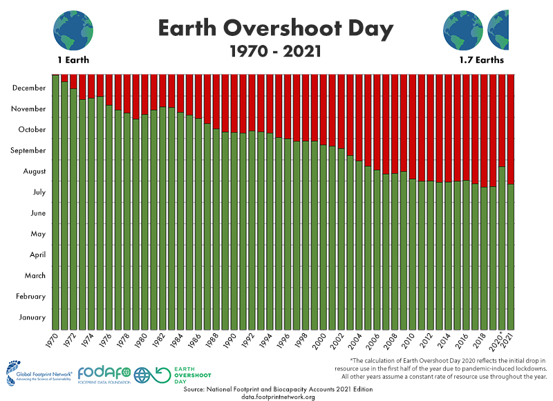
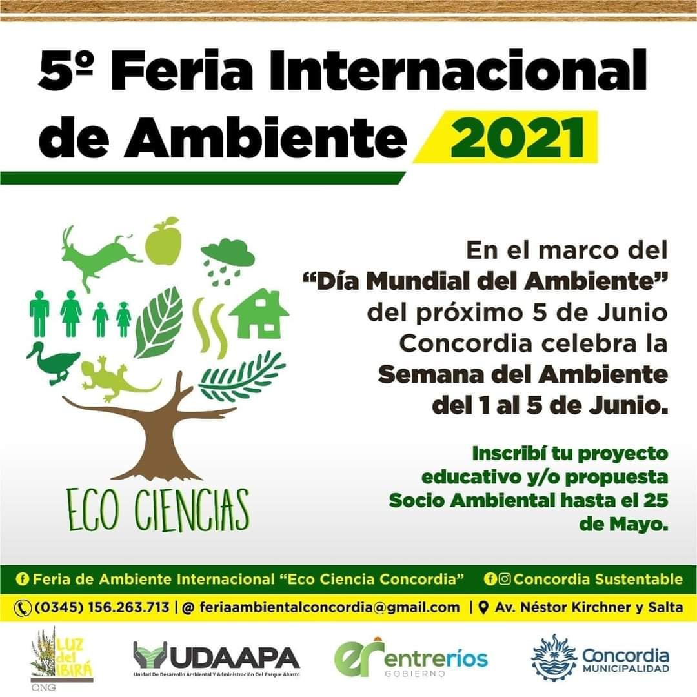
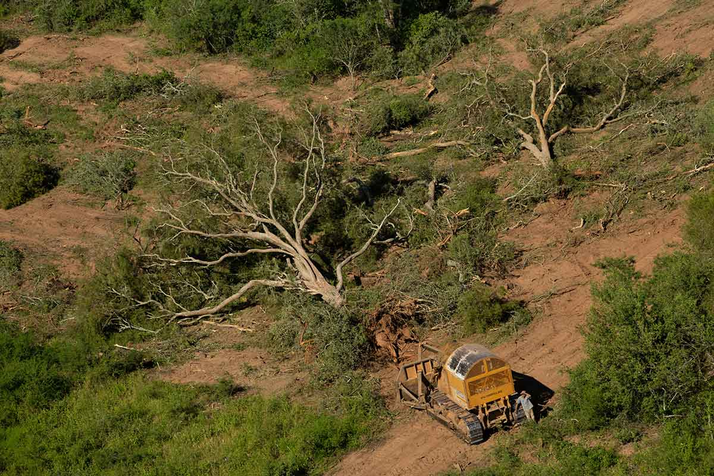

Todo sobre el medio ambiente en un mismo lugar
Global
Earth Overshoot Day
Earth Overshoot Day (o Día de Sobregiro de la Tierra, en español) llegó este 29 de julio. Se trata del día en que la Tierra ya consumió todos sus recursos naturales para 2021. Con respecto a 2020, que había sido el 22 de agosto, se adelantó un mes y genera preocupación en ambientalistas. En Argentina fue el 26 de junio.Es un cálculo que permite establecer en qué día del calendario un país o el mundo consume los recursos naturales que el planeta puede regenerar al año. El Overshoot Day es una fecha ficticia que sirve para medir qué tan rápido los seres humanos están consumiendo todos los recursos que el planeta es capaz de regenerar cada año. Este día en cuestión va cambiando cada año y en cada país, dependiendo del comportamiento de las personas y de las autoridades.
Global
La Feria Internacional del Medio Ambiente (FIMA 2021) celebrará su VII edición de manera presencial y con estrictos protocolos de bioseguridad, a partir del próximo 29 de septiembre hasta el 2 de octubre, según informó el Ministerio de Ambiente de Colombia. Este importante espacio, que constituye un referente en América Latina para la divulgación de proyectos ambientales de alto impacto y que se convierte en un escenario ideal para llevar a cabo transacciones comerciales de servicios especializados, tecnológicos y académicos en la región, se realizará en el centro de convenciones de Corferias en Bogotá.
El INTI impulsa el Calendario Ambiental 2021 como eje estratégico para el desarrollo sustentable. Se propone trabajar en el tratamiento de efluentes, el cambio climático y en la aplicación de herramientas de análisis de ciclo de vida e indicadores de calidad ambiental.A instancias del departamento de Medio Ambiente de la Región Centro del INTI se lanzó el Calendario Ambiental 2021 para llevar adelante actividades durante el segundo semestre del año en procura del cuidado del ambiente y el desarrollo de una producción más sustentable. La propuesta incluye espacios de sensibilización, transferencia de conocimientos, experiencias, y debates técnicos para mejorar las acciones colectivas de la sociedad, los espacios educativos, los tomadores de decisiones y los sectores productivos. Ello se lleva a cabo en el marco de la conmoración del Día Mundial del Medio Ambiente -el mayor evento anual impulsado por Naciones Unidas para promover el cuidado del ambiente y la producción sustentable. El cronograma propuesto incluye el abordaje de temas clave como el tratamiento de efluentes, el cambio climático, herramientas de análisis de ciclo de vida e indicadores de calidad ambiental, entre otros. En el primer encuentro llevado a cabo el 27 de junio, Verónica Bertoncini y Gustavo Ruhl, especialistas del departamento de Medio Ambiente de la región Centro del INTI, realizaron una presentación sobre la gestión integral de los Residuos Sólidos Urbanos (RSU) y sobre las tecnologías del compostaje domiciliario. “El calendario surge como una oportunidad de compartir el trabajo que venimos realizando y los ejes rectores que nos van a guiar en los próximos seis meses”, destacó Gretel Scelzi, directora del Centro NTI Entre Ríos.
Local
Ex funcionarios de Medio Ambiente y empresarios forestales procesados por la tala prohibida de bosques
La medida fue tomada en el marco de una causa que estaba dormida desde 2014 y en la que secuestró “madera sin identificar" de una docena de especies protegidas.Ex funcionarios del área de Medio Ambiente de la Nación y de la Provincia de Salta y empresarios forestales fueron procesados sin prisión preventiva pero con embargos de 430 millones de peso por la tala prohibida de bosques para exportar palo santo y otras maderas utilizando mano de obra barata de miembros de comunidades de pueblos originarios. El juez federal Sebastián Casanello dispuso la medida en una causa que estaba dormida desde 2014 y en la que secuestró “madera sin identificar, no sólo ‘palo santo’ sino también otras especies protegidas”, entre ellas lapacho rosado, urundel, petiribi o afata, quina, roble criollo, cedro, cebil moro y cebil blanco, nogal y pino del cerro. Los empresarios utilizaron una autorización legal para el desmonte para siembra y pasturas de una hacienda en el departamento salteño de Orán, que incluía la posibilidad de exportar el palo santo obtenido por los trabajos. El desmonte nunca se realizó, pero con esa documentación los empresarios intentaron la exportación de palo santo, cuyo origen resultaba desconocido y cuya extracción no había sido autorizada. Según la resolución, de un centenar de páginas, hubo “actividad de tala y extracción de palo santo desarrollada en sitios no autorizados, con el fin de proceder a su posterior comercialización en el mercado exterior”. La causa se inició en marzo de 2014 a raíz de la denuncia del Programa de Control y Fiscalización de la Secretaría de Ambiente de la Provincia de Salta. El valor de la exportación que intentaron los empresarios ahora procesados supera los 20 millones de pesos. Casanello dispuso un embargo de 430 millones de pesos ante la eventual “obligación de resarcir el daño producido por el delito” de naturaleza ambiental. La resolución explica que la empresa Tierra Vasca SA. “había sido autorizada por resolución n° 328/13, de fecha 22 de mayo de 2013, a cambiar el uso del suelo en una superficie total de 4555 hectáreas de la Finca Las Colmenas”. “Se habilitó que 2.998 hectáreas de ese total fueran plenamente desmontadas para ser usadas con fines de agricultura y ganadería con implantación de pasturas. Dicha aprobación autorizaba, además, el aprovechamiento del producto forestal remanente de los desmontes en determinadas cantidades establecidas”. Sin embargo, mediante el cotejo de “imágenes satelitales, corroborado con posterioridad a partir de una constatación por parte de las autoridades competentes en el propio campo, que el desmonte allí autorizado, el cual supuestamente legitimaba el origen de la madera, no había sido ejecutado”. Con ese disparador, el juez detectó “serias afectaciones al medioambiente de distintas jurisdicciones, dado que se extraería madera de lugares desconocidos, de forma ilegal clandestina y mediante documentación que posee los requisitos formales cumplidos, pero que reflejan una realidad inexistente”. En concreto, se intentó “la exportación de 1.282,30 toneladas de madera de palo santo que habrían sido objeto de una extracción no autorizada por ninguna autoridad gubernamental”. “No se habría tratado de un caso aislado, sino que se enmarcaría en un esquema de actuación más amplio. A través de la maniobra desplegada se habría buscado otorgarle cobertura legal, por medio de la utilización de un permiso de desmonte emitido por la autoridad gubernamental, a la actividad de tala y extracción de palo santo desarrollada en sitios no autorizados, con el fin de proceder a su posterior comercialización en el mercado exterior”. La secuencia no estuvo exenta de pagos ilegales, tal como el juez consignó en el secuestro de correos electrónicos entre los procesados, en los que figuran alusiones “a la necesidad de pagar un soborno a un inspector de la Aduana con el objeto de eludir una verificación sobre la madera a exportar”. “Recordá enviarme los $1.000 para el verificador, por la amable atención que nos brindó cuando verificamos el palo santo” y “para solucionar rápidamente este inconveniente, nos solicitan un honorario de $1000,00”, son dos de los correos electrónicos citados en la resolución. Casanello dictó los procesamientos de Claudio Domínguez y Elvio Ciganotto (administradores de las firmas Regional Wood SA y Tropical Bushes SRL); Zhang Yanchao y Silvana Logiudice (integrantes de la firma Winner Internacional SRL); Santiago Piceda, Jorge Luciano Rafart Corveto y Melisa Esperanza Piceda (integrantes de la firma Entrecomex Global Service SRL). También procesó a los ex funcionarios Natalia Rangeon, directora de Planificación Territorial de la Secretaría de Ambiente de Salta; Gustavo Paul, secretario de Ambiente de Salta, y Eduardo Álvarez, coordinador de la Dirección Nacional de Ordenamiento Ambiental y Conservación de la Biodiversidad del Ministerio de Ambiente de Nación. La lista se completa con Jorge Pocovi, Cristian Gribaudo, Hugo Rolando Girón, Pablo Gabriel Isa. Precisamente Isa intentó justificar las omisiones a las inspecciones sobre la tala ilegal explicando que por parte de las autoridades existía una “necesidad u obsesión de prohibir por prohibir sin fundamentos y con intereses ocultos dirigidos a reducir o matar una actividad productiva que generaba mano de obra intensiva y sostenía a familias criollas y aborígenes (pueblos originarios) como un medio de vida legítimo y ancestral”. Sin embargo, de la investigación surgió –mediante el secuestro de varios cuadernos con registros de la actividad ilegal- cómo era el empleo de los trabajadores pertenecientes a los pueblos originarios: “se reflejaba en forma de cuenta corriente escrita a mano, la cantidad de madera talada por cada miembro de la comunidad y la entrega de alimentos a cambio de ello”.